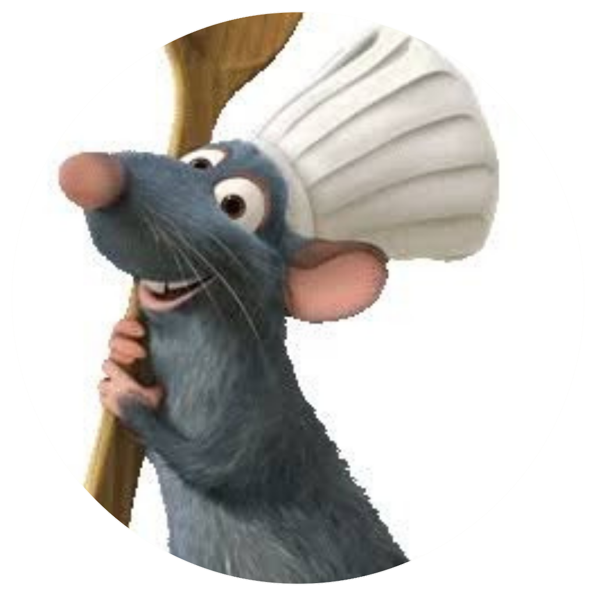

Alfredo Linguini es un joven torpe que llega a París con una carta de recomendación y consigue trabajo limpiando la cocina del restaurante de Gusteau. Cuando descubre a Remy cocinando, se hacen aliados: Remy lo guía desde adentro de su gorro y juntos conquistan a los críticos más exigentes.
Remy es una rata con un olfato y un paladar extraordinarios, que sueña con ser chef como su ídolo Gusteau. Separado de su familia, llega a París y se une a Linguini. Con su talento demuestra que no importa de dónde vengas: todos pueden cocinar, incluso un ratón.

CONTRATAME :)Colette Tatou es la única mujer en la cocina de Gusteau: dura, rápida y muy talentosa. Al principio le enseña a Linguini las reglas del oficio con poca paciencia, pero con el tiempo se vuelve su mejor apoyo. Juntos terminan dirigiendo su propio restaurante.